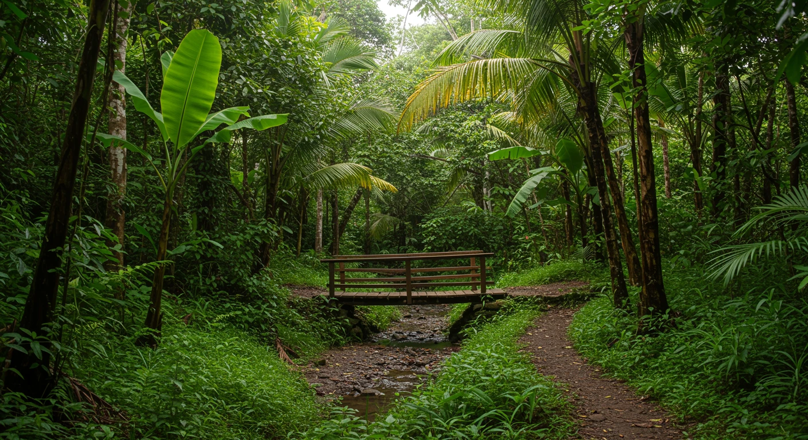
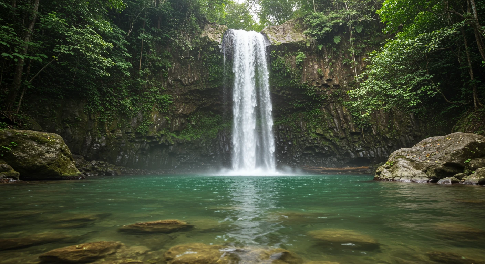
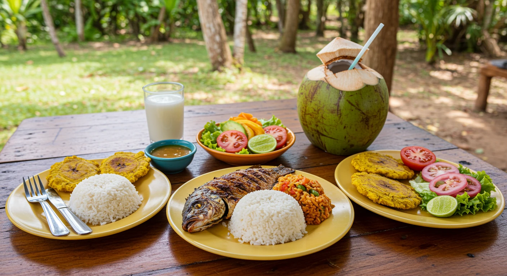

Excursión a la Cascada El Limón
Una aventura inolvidable en el corazón de Samaná

Descripción del Tour
Embárcate en una emocionante aventura hacia la majestuosa Cascada El Limón, un salto de agua de más de 40 metros de altura escondido en la exuberante vegetación tropical de Samaná. Puedes elegir realizar el recorrido a caballo, guiado por locales expertos, o disfrutar de una caminata escénica a través de senderos naturales.
Al llegar, maravíllate con la imponencia de la cascada y disfruta de un refrescante baño en la piscina natural que se forma en su base. Es una experiencia perfecta para amantes de la naturaleza y la aventura.
Itinerario
- 8:00 AM: Recogida en tu hotel en Las Terrenas.
- 8:45 AM: Llegada al punto de inicio de la excursión (rancho).
- 9:00 AM: Inicio del recorrido a caballo o a pie hacia la cascada.
- 10:00 AM: Llegada a la Cascada El Limón. Tiempo libre para fotos y baño.
- 11:30 AM: Regreso al rancho.
- 12:30 PM: Almuerzo típico dominicano en el rancho.
- 1:30 PM: Regreso hacia Las Terrenas.
- 2:15 PM: Llegada aproximada a tu hotel.
Galería de Fotos

